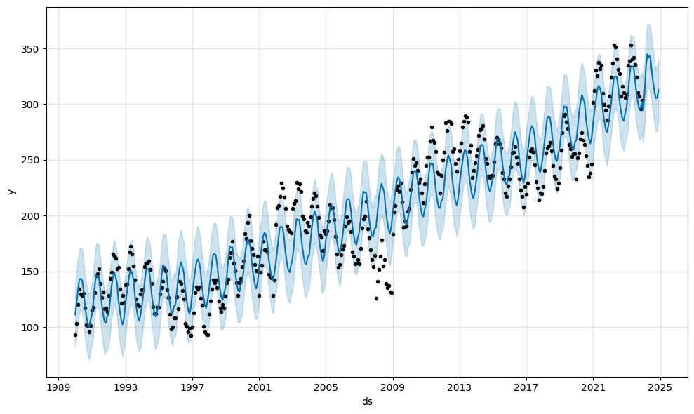
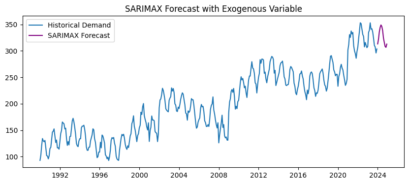

Problem
Existing demand forecasts struggle to optimize inventory and guide long-term strategy for energy-efficient appliances. Models are either too simplistic or too rigid for complex data, creating a paradox: balancing precision for operations with actionable strategic insights is difficult, leading to inefficiencies and missed opportunities.
Action
- Strategic Model Design for Balanced Needs: Led demand forecast development (30+ years of data), balancing short-term operational needs with long-term strategic decision-making.
-
Progressive Modeling Approach & Comparative Analysis:
- Data Preparation & Pre-analysis: Cleaned and decomposed 30+ years of demand data to understand patterns.
- Baseline & Seasonal Modeling (ARIMA, SARIMA): Applied ARIMA(1,1,1) and SARIMA(1,1,1)(1,1,1,12), evaluating fit (SARIMA AIC: 2824.8, BIC: 2844.7) for initial benchmarks. 
- Strategic Feature Integration (SARIMAX): Tested dummy sine proxies; confirmed non-significance (Exog coefficient near zero, p=1.0). This highlighted the critical need for *real, business-relevant external drivers* to inform product strategy. 
- Comparative Modeling (Prophet): Assessed Prophet's flexible handling vs. SARIMA/SARIMAX (Prophet MAE: 22.83, RMSE: 23.77 vs. SARIMA MAE: 7.71, RMSE: 8.51).
Figure 01: Time Series Forecast with Trend and Seasonality (1990–2023)
Figure 02: SARIMA(1,1,1)(1,1,1,12) Forecast with Exogenous Variable
Result
-
Quantified Performance Benchmarks: Established clear benchmarks by
quantifying MAE/RMSE across models, aiding future optimization and
business impact assessment.
Model MAE RMSE SARIMA 7.71 8.51 SARIMAX (with dummy exog) 7.71 8.51 Prophet 22.83 23.77 - Actionable Insights for Business Strategy: Validated business-relevant external drivers' role in boosting predictive power, enabling precise inventory allocation and reduced stock-out risks. This is pivotal for data-driven strategic planning.
- Modular & Scalable Forecasting Framework: Delivered a modular, scalable pipeline ready for seamless integration of new business drivers, enhancing adaptability for diverse product and operational planning.
Report
📍 Notebook (nbviewer):
HERE
📌 Data: Historical demand (1990–2023)